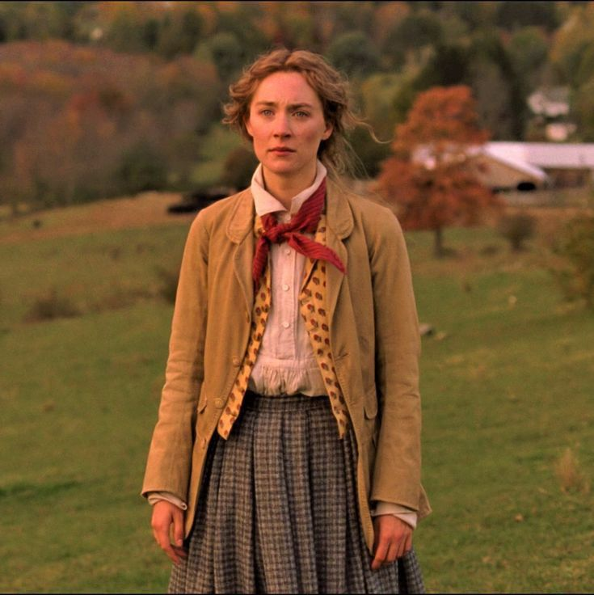
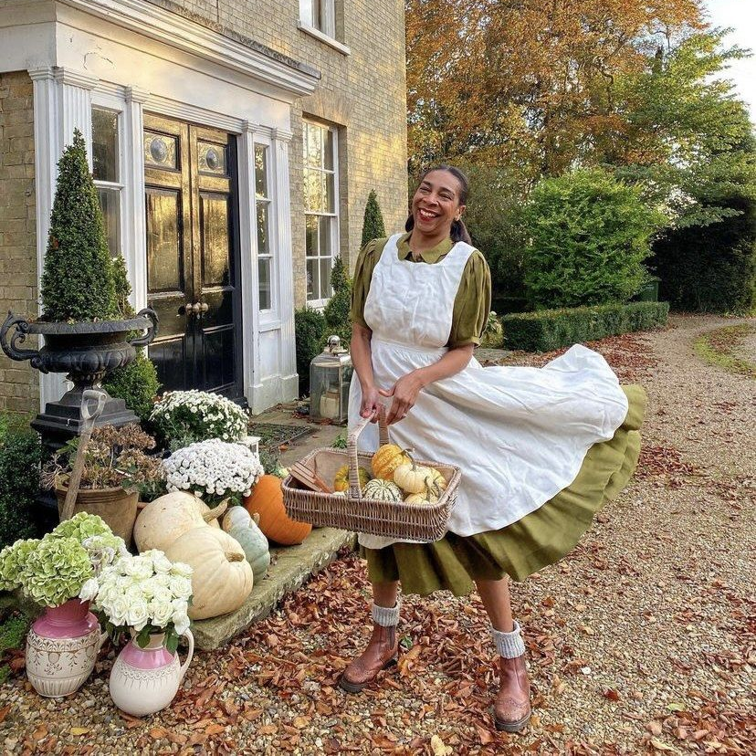
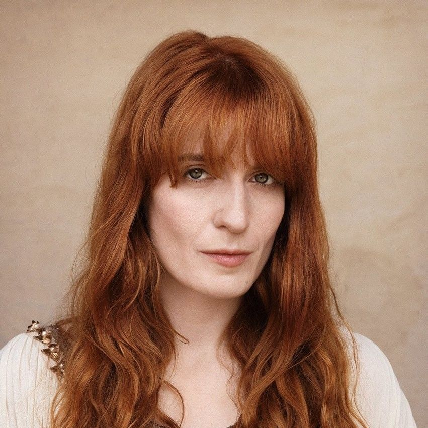

Obra cinematográfica clave para la estética cottagecore y folk-core. Su diseño de vestuario fusiona la precisión histórica de la era victoriana con un enfoque bohemio, libre y moderno. Destaca por el uso de paletas de color personalizadas para cada personaje (tonos tierra, lavanda y verdes boscosos), superposición de prendas, camisas de cuello alto, chalecos tejidos, faldas amplias de algodón y siluetas cómodas que celebran la vida rural y la naturaleza.
La adaptación de la novela clásica es el cottagecore hecho imágenes. La moda edwardiana del siglo XIX, los delantales de trabajo sobre faldas de lino, los lazos en el pelo y la obsesión de la protagonista por las flores y la naturaleza definen el lado más puro y campestre del estilo.

Es el referente actual de la moda cottagecore en redes sociales. Su estilo adapta la estética a la vida real con faldas de tablas, vestidos florales de marcas como Hill House Home, cárdigans perfectos y sombreros estructurados, viviendo el sueño campestre desde su casa de campo.

Representa la vertiente más bohemia y espiritual. Su estilo se basa en vestidos vintage fluidos de los años 70, encajes antiguos, mangas victorianas infinitas y coronas de flores, mezclando la vida de campo con un aire de bruja buena del bosque.